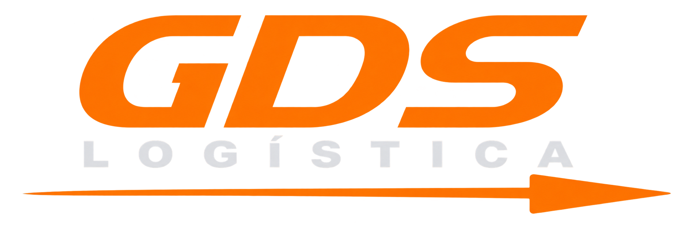

Gestão de troca de óleo
Controle preventivo da frota
Veículos ativos0
Trocas vencidas0
Trocas próximas0
Sem troca0
| Placa | Modelo | KM atual | Última troca | Próxima troca | Situação | Ação |
|---|
Atualizar quilometragem
Digite o KM mostrado no painel. A partir de 10.000 km após a última troca, o veículo será sinalizado como vencido.
Registrar troca realizada
Cadastro de veículos
| Placa | Modelo | Ativo | Ação |
|---|
Relatório
Consulte, edite ou exclua os lançamentos.
Quilometragens lançadas
| Data | Responsável | Placa | Modelo | KM | Ações |
|---|
Trocas realizadas
| Data | Placa | Modelo | KM | Filtros | Ações |
|---|